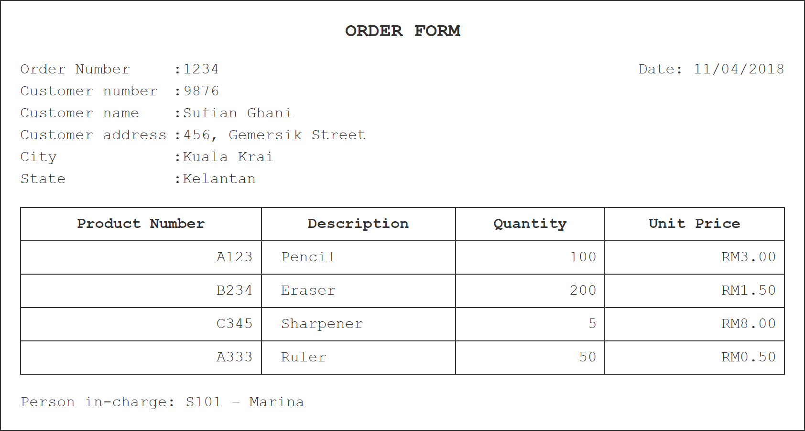
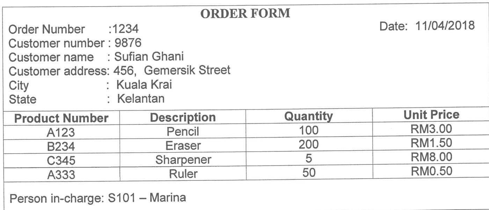
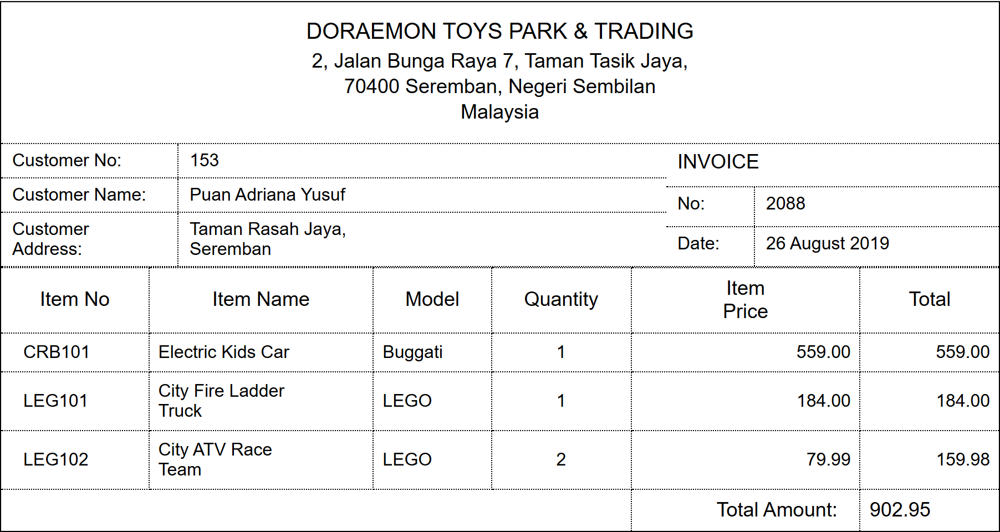
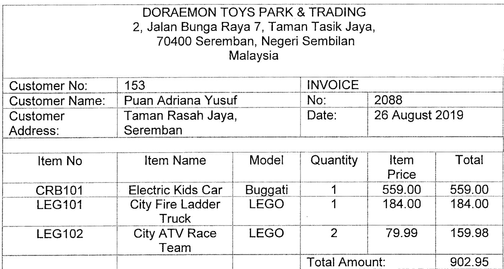
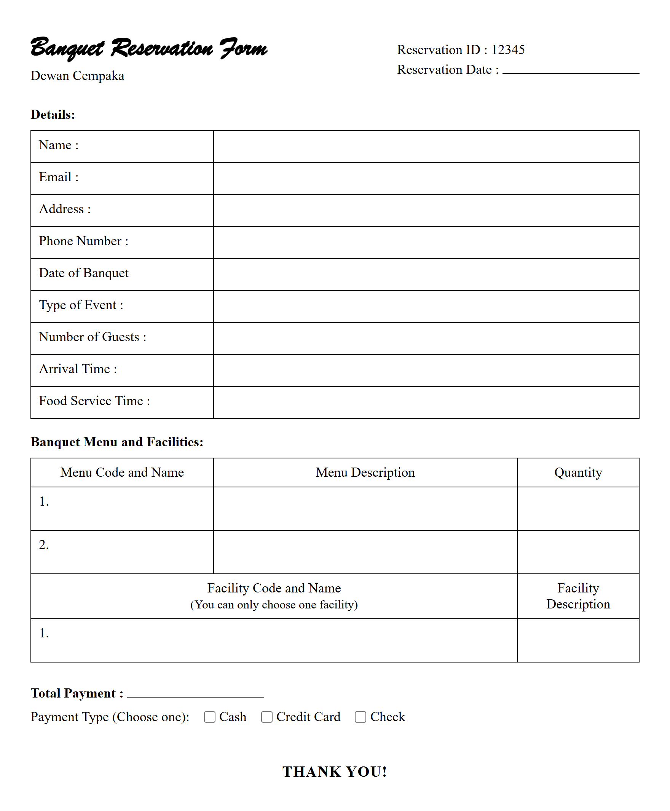
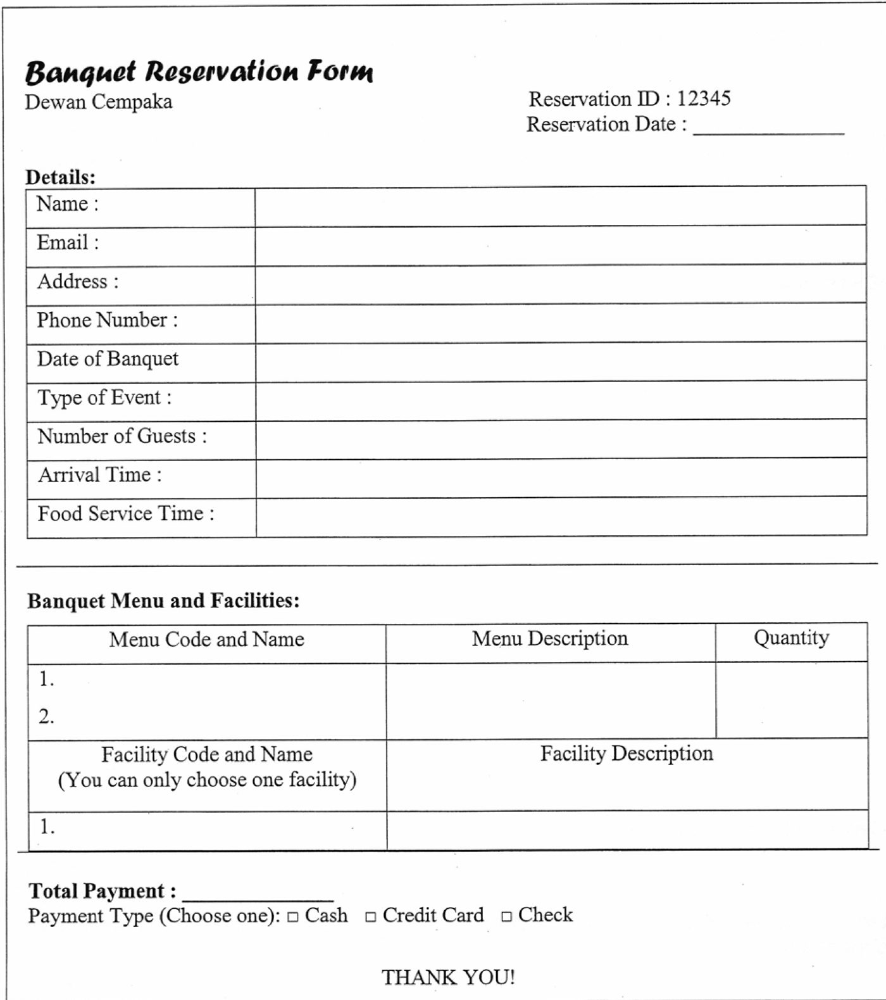
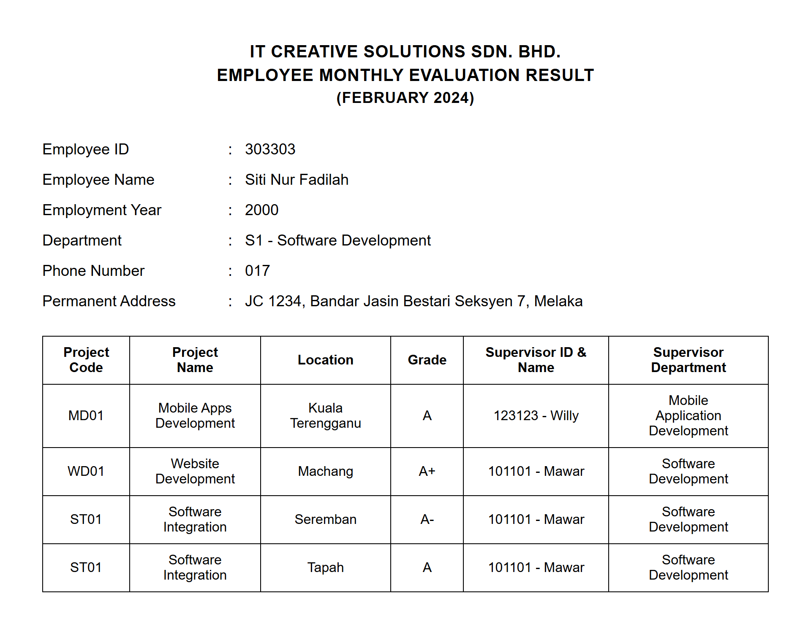
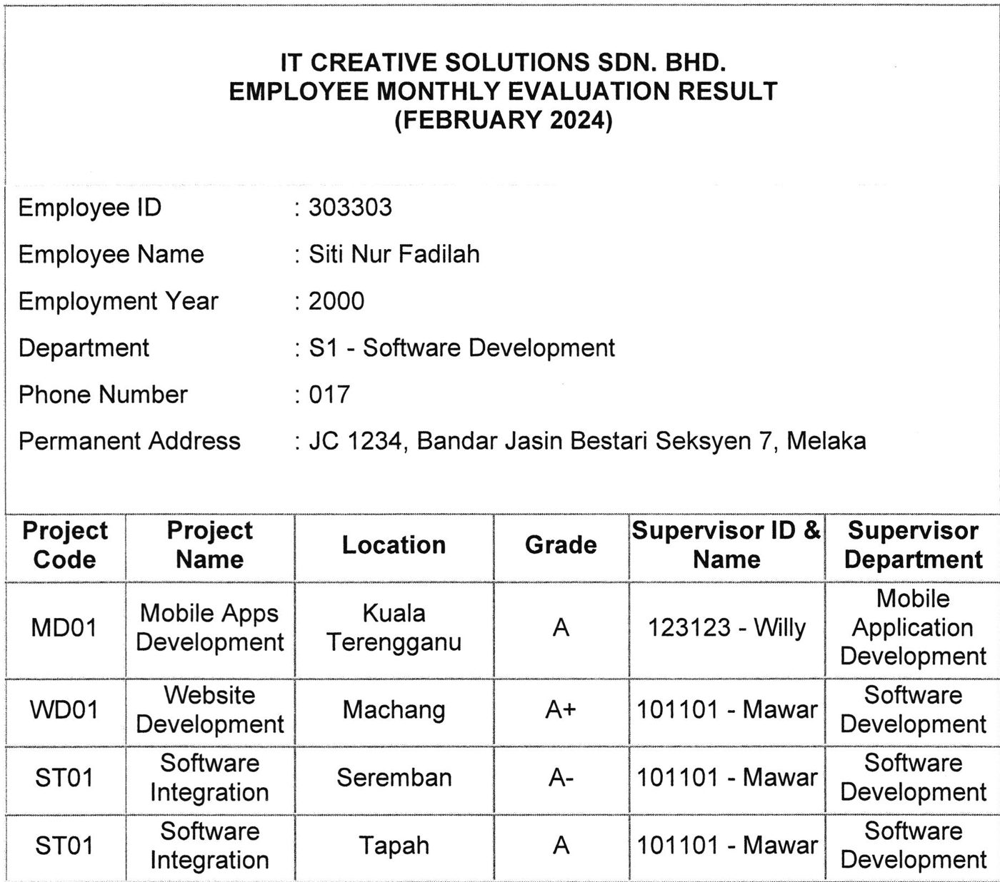
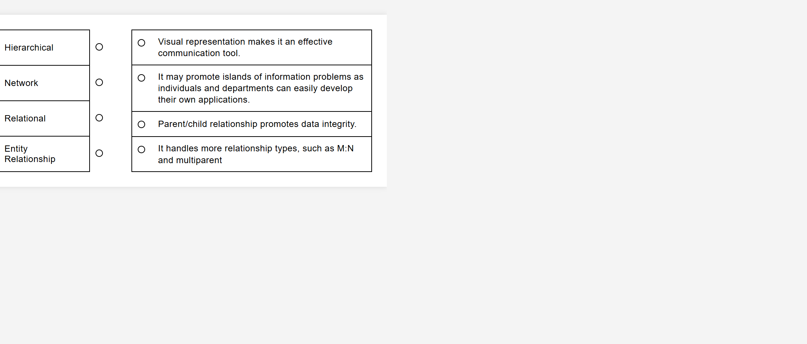
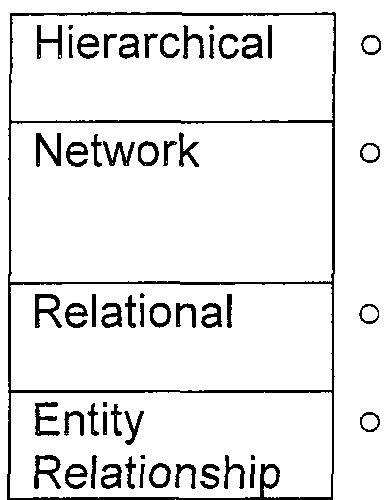

Only questions with a needs-fix verdict or a “use recreation” asset. Review each HTML recreation against the original crop, choose a verdict, add notes, then press Export decisions JSON. 5 questions.
The following questions will be based on order form in Table 1.0. a) Convert the order form in Table 1.0 into a relational schema format. b) State the primary key(s) in (a). c) Normalize the table until third normal form (3NF). Show all your work.


Based on order form shown in Figure 3.0, answer the following questions: a) Convert the data in Figure 3.0 into a relational schema format. b) State the primary key(s) based on (a). c) Normalize the table until third normal form (3NF). Show all the steps taken.


Based on the given reservation form, answer the following questions: a) Define normalization and explain the purpose of having normalization in a database table. (3 marks) b) Describe THREE (3) effects of a poor database design. c) Show all the steps to normalize the structure until third normal form (3NF). The primary key(s), partial dependencies and/or transitive dependencies need to be clearly identified.


Figure 2 shows a report of an employee evaluation result in IT Creative Solutions Sdn. Bhd. in Shah Alam. The report contains all information related to one of the employees in this company. Each employee has been assigned to several projects. Meanwhile, each project has been assigned to several employees. Each project has been supervised by one employee (Supervisor). Supervisor also manages several employees. Based on the information given, answer the following questions: a) State the normal form of the Figure 2 above. Explain your answer with reasons. b) Convert the report into a relational schema. Identify the primary key(s) and partial dependencies and/or transitive dependencies. c) Normalize the relational schema in (b) until third normal form (3NF). Show all the steps involved.


a) The evolution of data models has been driven by the increasing complexity of data storage, management, and analysis needs over time. Match the suitable data models with their correct statements. b) The following relational schema provides a basic structure for managing pet sales in a pet shop system. It includes customer information, pet information and purchase transactions. PETS (PetID, Name, Species, Age, Price, PurchaseID*) CUSTOMERS (CustomerID, Name, Address, Phone, Email) PURCHASES (PurchaseID, CustomerID*, PurchaseDate) Based on the relational schema above, describe TWO (2) related business rules. c) Security is a crucial aspect of DBMS. Describe THREE (3) reasons for protecting data from unauthorized users. d) Briefly explain THREE (3) challenges in handling multimedia data compared to traditional structured data.

